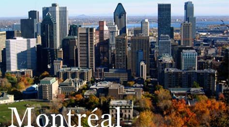

Welcome to Montreal Attractions
One of the world's largest French-speaking cities, with some 1.7 million people (3.8 in the metropolitan region), Montreal is also a melting pot of cultures from over the world as witnessed by its mosaic of ethnic neighbourhoo ds and the diversity of its restaurants. An island city that's open to the world, Montreal is a lively town that' s always ready for a party!
Did you know?
- Our underground city has over 30 km (18 miles) of pedestrian walkways, indoor areas and tunnels linking 10 metro stations, 2 train stations, 2 bus stations, 62 buildings, 7 major hotels, 1,615 apartments, 200 restaurants, 1,700 boutiques, 37 movie theatres and exhibition halls, 2 universities, 1 college and 10,000 indoor parking spaces.
- In total, 80 languages are spoken in the Montreal region, including French, English, Italian, Spanish, Arabic, Greek, Chinese, German, Portuguese, Creole and Vietnamese.
- A popular local snack is poutine (French fries with cheese curds topped with gravy), absolutely delicious!